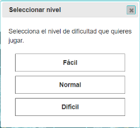
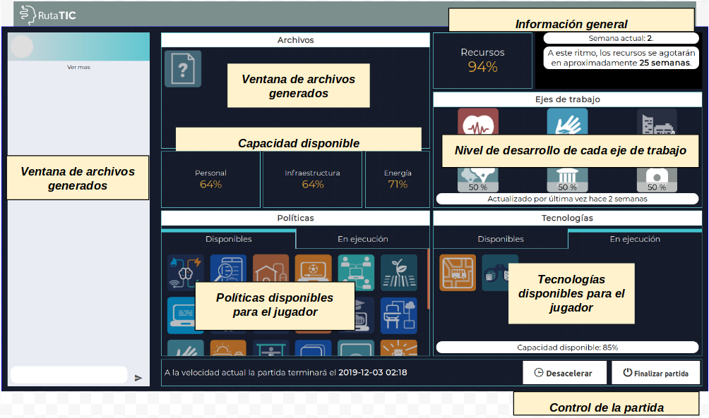
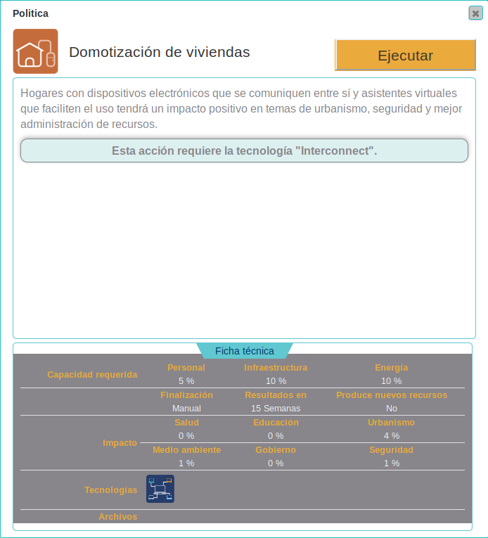
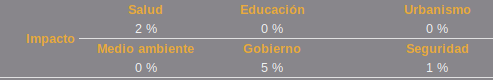
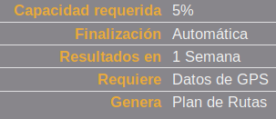

Selecciona el nivel de dificultad que quieres jugar.
Reglas básicas
“SmartCity” - Juego colaborativo de cartas y tablero
Objetivo
Lograr el desarrollo sostenible de una ciudad a través de la implementación de políticas que la conviertan en una ciudad inteligente.
Indicaciones
Smartcity es un juego en el que el equipo de jugadores debe lograr, de manera colaborativa, el desarrollo sostenible de una ciudad inteligente en un tiempo simulado de 52 semanas. En la medida en que van pasando las semanas, el equipo debe ir agregando y verificando “políticas” soportadas en determinadas “tecnologías” con el fin de lograr que los recursos de la ciudad no sólo se mantengan durante todo el tiempo de juego, sino que incluso lleguen a aumentar. A continuación se enuncian las indicaciones generales para jugar:
- El juego ofrece la oportunidad de jugar hasta dos partidas.
- Al iniciar una partida se ofrece la posibilidad de seleccionar el nivel de dificultad, entre: fácil, normal o difícil.

- Cuando se inicia la partida a cada jugador se le presenta un tablero de juego con las siguientes secciones:

- Cada integrante del equipo comienza con una serie de cartas que representan las “políticas” y las “tecnologías”. Dichas cartas se han repartido aleatoriamente entre los integrantes y no hay cartas repetidas, por lo que la comunicación es muy importante para definir la estrategia de qué cartas jugar. Cada jugador puede conocer el detalle de las políticas y tecnologías disponibles haciendo clic sobre cada una de ellas y viendo su ficha técnica.
Ficha técnica de una política.
- Desde el inicio del juego cada integrante del equipo tiene las mismas posibilidades de jugar sus cartas; no hay turnos de juego.
Jugar una Política:
Cuando un jugador desee activar una política debe considerar lo siguiente:
- En la ficha técnica de la política observar que cuente con la capacidad requerida de personal, infraestructura y energía necesarios para jugar la política.
Ejemplo de capacidad requerida por una política.
- Observar que la política no requiera una tecnología o un archivo específico, o en caso que lo requiera que dicho archivo ya esté disponible en la ventana de archivos, o que la tecnología ya esté en ejecución, así haya sido jugada por otro compañero del equipo.
Ejemplo de tecnología y archivo requeridos en una política.
-
Considerar el tiempo que tarda la política en generar recursos y su tipo de finalización: manual o automática.
Ejemplo de política con finalización manual y resultados a partir de la semana 14.
Toda política que se retire de la ventana de ejecución liberará la capacidad requerida para su ejecución, permitiendo así aumentar dicha capacidad para jugar otras políticas.
- Considerar el impacto que tiene la política cuando genere resultados:
Ejemplo de impacto de una política en los ejes de trabajo.
Cuando una política cumpla en ejecución el tiempo definido en “Resultados en”, generarán un impacto en los “Ejes de trabajo” de acuerdo a lo que se muestra en la ficha. Algunas pueden tener incluso impacto negativo en algunos ejes. Así mismo, algunas políticas comenzarán a generar nuevos recursos.
Es importante jugar políticas cuyo resultado sea antes del tiempo estimado de finalización de los recursos.
Procurar jugar políticas que tengan un alto impacto positivo en la mayoría de ejes, y mucho mejor si son políticas que generan nuevos recursos.
- Una vez considerados los puntos anteriores, presionar el botón “Ejecutar”. El sistema validará y pondrá la acción en ejecución.
Existen dos tipos de finalización para las políticas. La finalización “Manual” indica que, una vez la política está en ejecución, permanecerá en dicho estado hasta que un jugador decida “Detenerla” en la pestaña de “Ejecución”. Por el contrario, si la finalización es “Automática”, la política dejará de estar en ejecución automáticamente una vez cumpla su tiempo de generación de resultados.
Si una política está generando buenos resultados y no se requiere liberar la capacidad requerida de la misma, lo mejor es dejarla en ejecución.
Jugar una Tecnología:
Cuando un jugador desee activar una tecnología debe considerar lo siguiente:
-
En la ficha técnica de la tecnología observar que cuente con la capacidad requerida necesaria.
Ejemplo de capacidad requerida por una tecnología.La capacidad disponible se observa bajo la ventana de las tecnologías disponibles o en ejecución:
 En la imagen se ve que todavía queda 85% de capacidad para ejecutar tecnologías.
En la imagen se ve que todavía queda 85% de capacidad para ejecutar tecnologías. - Observar qué archivos requiere.
Ejemplo de una tecnología que requiere el archivo "Datos de GPS" y genera el archivo "Plan de Rutas".
- Identificar los archivos que genera y el tiempo que tarda en generarlos.
- Una vez considerados los puntos anteriores, presionar el botón “Ejecutar”. El sistema validará y pondrá la acción en ejecución.
Existen dos tipos de finalización para las tecnologías. La finalización “Manual” indica que la tecnología se mantendrá en ejecución hasta que se decida detenerla; si una política depende de la tecnología que se desea detener, primero debe ser detenida la política. Si la finalización es “Automática”, la tecnología dejará de estar en ejecución automáticamente una vez cumpla su tiempo de generación de resultados. Los archivos que genere seguirán disponibles sin importar que la tecnología ya no esté en ejecución.
Es útil jugar aquellas tecnologías que estén asociadas a la producción de archivos o den soportes a políticas que se haya decidido jugar, para evitar consumir capacidad en tecnologías no requeridas.
Existe una tecnología llamada “Visor en tiempo real del estado de la ciudad”. Se recomienda jugar esta tecnología para mantener actualizada la información del porcentaje de desarrollo de cada uno de los ejes de trabajo.
Generar archivos
Algunas políticas tienen como prerrequisito determinados archivos. Estos archivos son generados por las tecnologías. Para generar un archivo específico se deben mirar las fichas técnicas de las tecnologías y poner en ejecución aquella que genere dicho archivo. La tecnología producirá el archivo de manera automática al momento de generar resultados, y dicho archivo quedará disponible hasta finalizar la partida.
Detención o retiro de cartas en ejecución
Solo el jugador que juega determinada carta puede detener su ejecución. Sin embargo, si la carta es de finalización automática, una vez que pase el tiempo necesario se retirará automáticamente de las cartas en ejecución y quedará disponible de nuevo. Si en ejecución hay una política que requiere una tecnología que también está ejecutándose, dicha tecnología no puede detenerse hasta que no finalicen la política.
Las proyecciones que se muestran al usuario (tiempo y recursos) se hacen con base en las estimaciones o valores obtenidos al momento de la proyección, sin embargo no necesariamente así se comportará el juego, pueden haber modificaciones con cada cambio de semana.
Otras reglas y condiciones a considerar:
- El juego tiene una duración de un “año virtual” y se representa por medio de las 52 semanas del año.
- Cada semana corresponde a una hora real, es decir, el juego puede durar máximo 52 horas reales.
- Para facilitar la jugada de una partida en los casos que se requiera agilidad, los jugadores pueden acelerar el paso del tiempo en 5X, es decir, una semana virtual durará poco menos de 4 minutos y un juego completo duraría aproximadamente 3 horas y media.
- La duración del juego puede ser mucho menor si se terminan los recursos, en ese caso se pierde el juego.
- En cualquier momento los jugadores pueden “finalizar la partida”. Cuando se finaliza una partida, se hace una proyección de los recursos con base en lo generado hasta el momento, para determinar si se ganó o se perdió el juego.
- Una vez finalizada la primera partida, se puede iniciar una segunda. Solamente se tienen dos partidas disponibles por grupo.